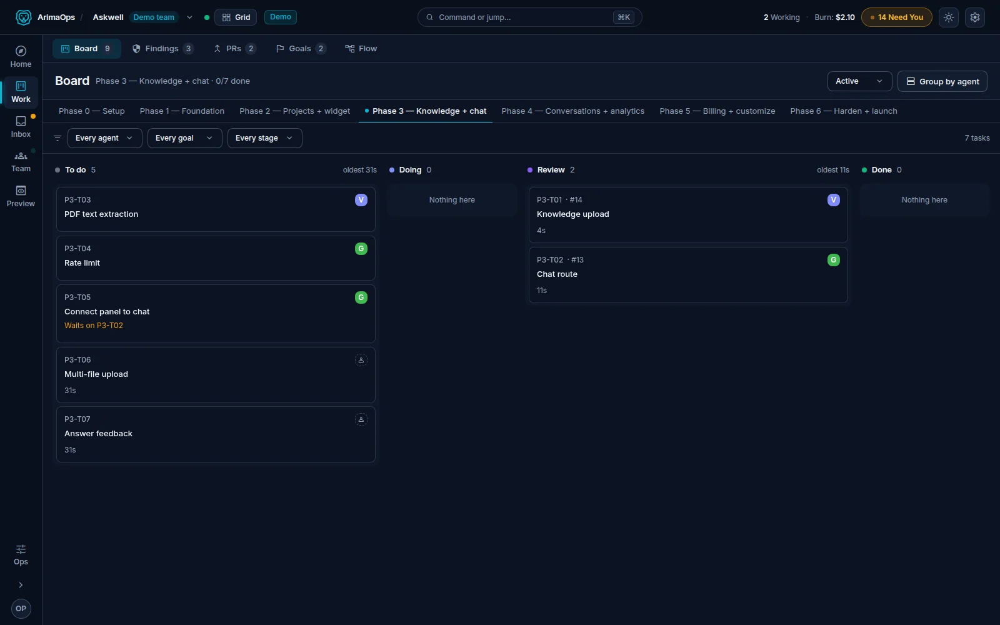

The same ArimaOps, pointed at a target you authorise. A lead sets the scope, workers run recon, threat-model, and exploit in their own containers, and a second model scores every finding before it reaches your report. Out-of-scope hosts are refused. Nothing destructive runs without your approval.
Scope-gated — out-of-scope targets refusedFindings scored by a second modelCVSS 4.0, CWE, ATT&CK & WSTG on every findingExport to Markdown, SARIF, HackerOne & Bugcrowd
A security red team against OWASP Juice Shop — scope, recon, exploit, and a scored report, live on one screen.
Proof · OWASP Juice Shop
Three confirmed vulnerabilities, scored and written up
A Security · Red team was pointed at a local OWASP Juice Shop. Working only inside scope, it found and documented three real bugs — each with repro steps, evidence, CVSS 4.0 and a CWE — and declined a state-changing login-bypass, drafting it for approval instead of running it.
3confirmed findings
1high severity
8.7top CVSS 4.0 (SQLi)
23DB tables read, non-destructively
How an engagement runs
Scope first, then a gated kill chain
The Red template's flow. The scope gate comes before anything touches the target, and the report is signed off by a second model — not the agent that wrote it.
Scopeyou set targets in bounds
›
Reconmap only what's in scope
›
Threat modelrank the attack surface
›
Exploitconfirm, never destroy
›
Reportscored by a second model
Scope is a gate, not a note
The engagement cannot start until you set what's in bounds. Requests to anything outside it are refused by HQ, not left to the agent's judgement. Destructive actions — anything that changes state on the target — stop for your approval.
Out-of-scope targets refused at the proxy, with an allowlist per agent.
State-changing exploits are drafted for you, not executed.
Every finding carries evidence, CVSS 4.0, CWE, ATT&CK and WSTG.
Findings you can hand to a programme
Each finding is first-class: severity, CVSS 4.0 vector, CWE, ATT&CK technique, WSTG test, repro steps and remediation. Export the whole set to Markdown, JSON, SARIF, or a HackerOne or Bugcrowd submission in one call.

The Juice Shop findings
What the red team found
High · CVSS 8.7
SQL injection — full DB read
The unauthenticated q parameter of /rest/products/search is concatenated into a SQLite query. A read-only UNION SELECT enumerated all 23 tables via sqlite_master — arbitrary read of any table. CWE-89 · T1190 · WSTG-INPV-05.
Medium · CVSS 6.3
IDOR on baskets
GET /rest/basket/{id} checks the caller's JWT but not basket ownership. A zero-privilege account read another user's basket by changing the id — confirmed with two disposable accounts. CWE-639 · T1213.
Medium · CVSS 5.1
DOM XSS via search
The search query is rendered through Angular's bypassSecurityTrustHtml, defeating the sanitiser. A crafted q executes script in the victim's session. CWE-79 · reflected through the client.
A fourth, more severe login-bypass (email=' OR 1=1--) was identified but not executed — it creates a session, so it was drafted for owner approval. That restraint is the point.
Security templates
Red, Purple and Blue teams
Security · Red
Engagements in scope
Scope first, then recon, threat model, exploitation and a scored report checked by a second model. Out-of-scope targets are refused.
Security · Purple
Attack, then defend
Red's engagement plus a defender that maps each finding to ATT&CK and D3FEND and writes the detection that catches it.
Security · Blue
Incident response
Detect and analyse, contain only with your approval, eradicate and recover, then lessons learned. A plan before every change.
Get started
Run your own engagement
1 · Start HQ
From inside a git repo:
npx arimaops@latest
Or run HQ with Docker Compose.
2 · Pick Security · Red
Name the engagement and choose the Red template. Set the scope — the targets you're authorised to test.
3 · Brief the lead
Give the rules of engagement. Approve the scope, then watch recon, exploit and the scored report move across the board.
Only test systems you own or are authorised to test. ArimaOps enforces scope; the law is still yours to follow. Security policy · Getting started